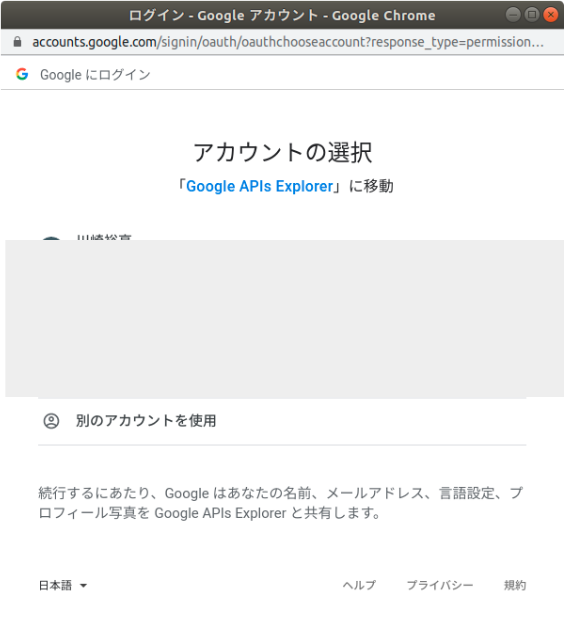
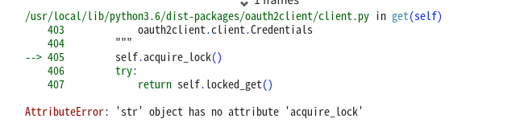
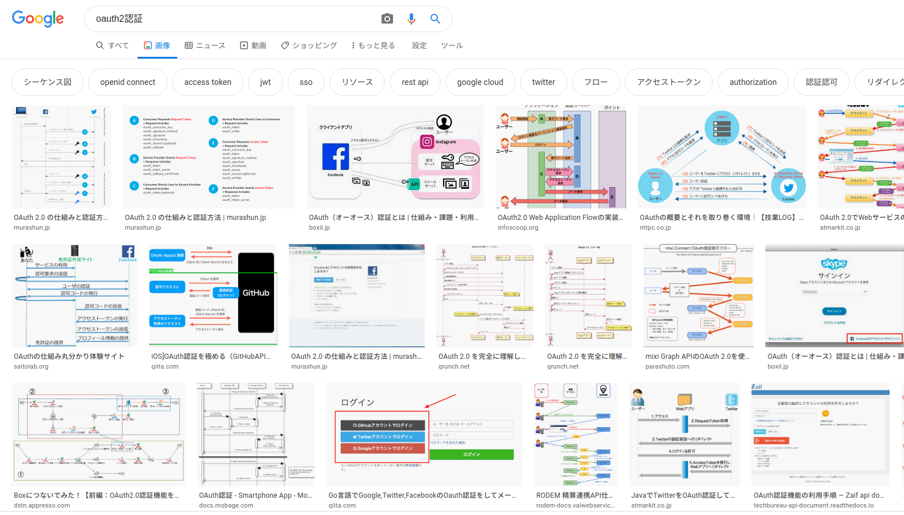

やさしいYouTube APIのはなし

前回は Twitter API を取得して定期ツイートする方法について書きましたが、今回の記事では YouTube API を試してみたいと思います。
APIとは？
APIとは何かざっくり説明いたしますと、
あるアプリケーションにまつわる操作を、
プログラミングを通じて自動化やらなんやら、といったものです。
例えば Twitter ならツイート検索や投稿などがPythonで実行できます。
Youtube にまつわるAPIは様々ありますが今回は YouTube Data API v3 を使っていきます。 YouTube Data API v3 は、動画、プレイリスト、チャンネルなどのYouTubeデータへのアクセスを提供するAPIです。
準備
まずは Google が提供しているクラウドコンピューティングサービスである、 Google Cloud Platform (https://console.cloud.google.com) にアクセスし、「プロジェクトの選択」から新しいプロジェクトを作成します。 次に「スタートガイド」の「APIを探索して有効にする」をクリック。
左側のタブからライブラリを選んでAPIが検索できます。 検索窓に YouTube と入力し、 "YouTube Data API v3" を選択して「有効にする」ボタンをクリック。 「認証情報」の画面から「認証情報作成」のボタンを押下し、APIキーを取得しておきます。
今回は「Google Colabotratory」での実装を試してみます。
「Google Colabotratory」は Google ドライブ上で使えるJupyter Notebookのようなものです。
ドライブ上にコードを保管できるほか、予め構築されたGoogleの仮想環境上で動かすことができるので大変便利です。
google-api-python-client モジュールを用いますが、これは Google Colab に始めからインストールされているようです。
!pip list を実行して確認できます。
実際に動かしてみる
早速YouTube APIで動画の情報を収集してみましょう。 例えば、ある投稿者の最新の動画を調べたい場合にも、APIを使って検索が可能です。 今回はHIKAKINさんのチャンネルで新しく投稿された動画について調べてみたいと思います。
さて、実は Youtube ではチャンネル毎に固有の ID が割り振られています。
これを search() 関数に与えることでAPI上で動画の検索ができます。
早速試してみます。
先程取得したAPIキーを使って、YouTubeにAPI経由でアクセスします。
from apiclient.discovery import build
from apiclient.errors import HttpError
YOUTUBE_API_KEY = "AI*************************************"
youtube = build("youtube", "v3", developerKey=YOUTUBE_API_KEY)
search_response = youtube.search().list(
part="snippet",
channelId= "UCZf__ehlCEBPop-_sldpBUQ",
maxResults=10,
order="date",
).execute()
titles = [item["snippet"]["title"] for item in search_response["items"]]
titles
出力結果は以下のようになりました。
HIKAKINさんの新着動画のタイトルが取得出来ています。
このようにYouTubeのサイトに直接アクセスしなくても、APIを叩くだけでちょっとした調べものが出来てしまいます。
自動化とOAuth2.0認証の実装
さらにAPIはプログラミング言語で動かすことが出来るという特性上、一連の操作をすべて自動でできるという利点があります。 例えば 自分が登録しているチャンネルを全て取得して、そのどれかが新しく動画をアップロードし、それが特定のワードを含む場合にメールでお知らせしてくれるようなシステム を作りたいとします。
まずは自分が登録しているチャンネルの一覧を取得してみましょう。 登録チャンネルは非公開情報ですので、取得するにはログイン権限が必要です。 Googleアカウントでログイン認証する際には、 OAuth2 (オーオースツー) 認証方式 が使われています。 下のような画面に見覚えがある方も多いと思います。

この画面を作ることで、自分の Google アカウントにログインし登録チャンネルを取得します。
幸いPythonには oauth2client というモジュールが存在し、これを使えば OAuth2認証 が簡単に実装できるようになっています。
早速やってみましょう。
まずはプログラムにOAuth認証を組み込むのに必要な、 クライアントIDとクライアントシークレット を取得します。 これは先程のAPI認証情報のページから容易に手に入ります。 これを使用してOAuth2認証を実装してみた結果が以下になります。

エラーが出ています。 何がいけなかったのでしょうか。
公式サイト (https://developers.google.com/youtube/v3/code_samples/python?hl=ja#add_a_channel_subscription) にAPI実装のサンプルコードが載っていました。 自力では無理でもこのサンプルをコピペすれば…
CLIENT_SECRETS_FILE = "client_secrets.json"
json？？？ その json はどっから出てきたんや？？？
storage？？？ そんなものは無いが？？？
……。
というわけでまったくやさしくないOAuth2認証のお話でした。
 ↑ 未知のモノを実装するにはその構造を理解する必要がある
まとめ
残念ながら今回はYouTube APIを使いこなすことが出来ませんでした。
プログラミングを学ぶ中で分からない概念に出会って心が折れてしまったこと、誰でも一度は経験があると思います。
そんな時には見極めが大事です。 本当に使う必要があるのか？ 別のルートで迂回は出来ないか？ それを覚える時間は無駄にならないか？ 自身のスキルアップに繋がるか？ などなど……
見極めた上で本当に必要だと思った知識は、是非時間を掛け学んで自分の武器にしてみてください。
次回は「やさしいOAuth2認証のはなし」について投稿予定です。
- 前の記事 : 【勉強会資料 2020 第5回】 統計入門
- 次の記事 : 【勉強会資料 2020 第6回】 機械学習とCNN入門
- 関連記事 :